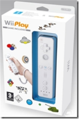

10 décembre 2006
J'ai la Wii........Mote !
Vendredi 8 Décembre, mon capital budgétaire s'élevait à 50 €, c'est à dire pas assez pour m'acheter la Wii. Je me rend à Leclerc. Aucun rayon dédié à la Wii, juste quelques accessoires et des jeux en vitrine.
Je me suis acheté WiiPlay qui comprend des mini-jeux plus une WiiMote.

Pourquoi acheter une WiiMote et un jeu alors que je n'ai pas encore la console ? Parce que la WiiMote est compatible sur Windows ! En effet des développeurs se sont attelés à la dure tâche pour nous fournir des drivers sur Mac OS X, Linux et Windows. Sur Windows, le logiciel s'appelle GlovePIE, c'est une interface de programmation pour pouvoir utiliser des controlleurs, manettes de jeux etc... Maintenant il est possible de jouer à Half-Life² ou encore à Need For Speed grâce à la WiiMote ! La Wii est sorti en Europe ce vendredi 8 décembre. Ce n'est que le début d'un nouveau phénomène... Antoine
Commentaires 0
Aucun commentaire.